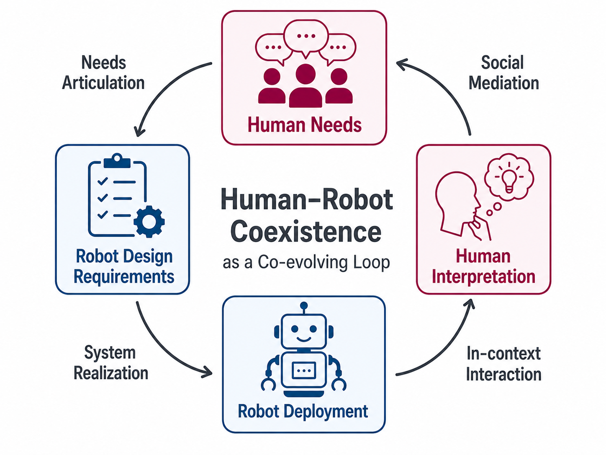
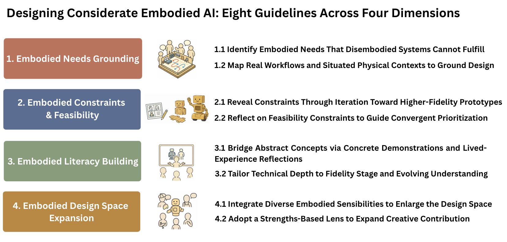
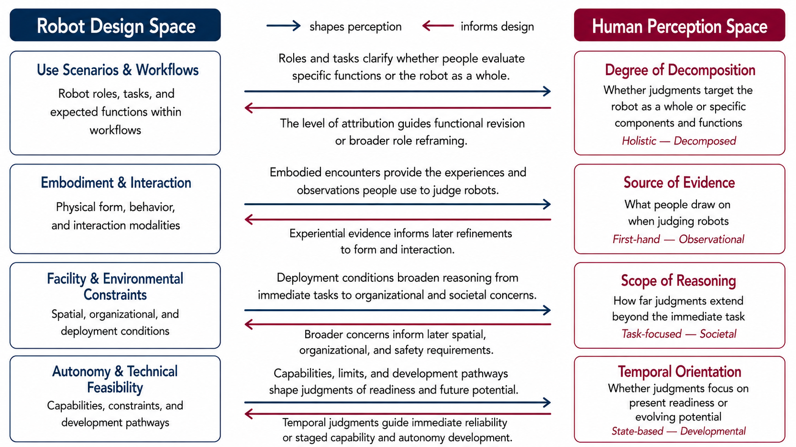

Considerate Human–Robot Coexistence
Toward embodied AI that is attuned to context, responsive to social dynamics, mindful of expectations, and grounded in deployment — studied from both sides of the encounter: how robots are designed and how people perceive them.
One Vision, Two Lenses
Embodied AI is moving into high-stakes, deeply human settings such as healthcare. For these systems to be considerate — rather than merely capable — we have to understand the encounter from two complementary lenses, and keep them in conversation with each other:
Robot Design Space
How embodied AI is conceived, scoped, and built — workflows, form and interaction, environmental constraints, and technical feasibility.
Paper 1 · Co-DesignHuman Perception Space
How people make sense of and judge those robots — decomposition, evidence, scope of reasoning, and temporal orientation.
Paper 2 · Dual-Space FrameworkThese two lenses form a co-evolving loop: design decisions shape what people perceive and expect, and human perception feeds back to reframe what we design next. The two papers below study each side — and together sketch a path toward considerate human–robot coexistence.

Towards Considerate Embodied AI: Co-Designing Situated Multi-Site Healthcare Robots from Abstract Concepts to High-Fidelity Prototypes

Abstract
Co-design is essential for grounding embodied artificial intelligence (AI) systems in real-world contexts, especially high-stakes domains such as healthcare. While prior work has explored multidisciplinary collaboration, iterative prototyping, and support for non-technical participants, few have interwoven these into a sustained co-design process. Such efforts often target one context and low-fidelity stages, limiting the generalizability of findings and obscuring how participants' ideas evolve. To address these limitations, we conducted a 14-week workshop with a multidisciplinary team of 22 participants, centered around how embodied AI can reduce non-value-added task burdens in three healthcare settings: emergency departments, rehabilitation facilities, and sleep disorder clinics. We found that the iterative progression from abstract brainstorming to high-fidelity prototypes, supported by educational scaffolds, enabled participants to understand real-world trade-offs and generate more deployable solutions. We propose eight guidelines for co-designing more considerate embodied AI: attuned to context, responsive to social dynamics, mindful of expectations, and grounded in deployment.

Towards Considerate Human-Robot Coexistence: A Dual-Space Framework of Robot Design and Human Perception in Healthcare

Abstract
The rapid advancement of robotics, spanning expanded capabilities, more intuitive interaction, and more integration into real-world workflows, is reshaping what it means for humans and robots to coexist. Beyond sharing physical space, this coexistence is increasingly characterized by organizational embeddedness, temporal evolution, social situatedness, and open-ended uncertainty. However, prior work has largely focused on static snapshots of attitudes and acceptance, offering limited insight into how perceptions form and evolve, and what active role humans play in shaping coexistence as a dynamic process. We address these gaps through in-depth follow-up interviews with nine participants from a 14-week co-design study on healthcare robots. We identify the human perception space including four interpretive dimensions (i.e., degree of decomposition, source of evidence, scope of reasoning, and temporal orientation). We enrich the conceptual framework of human–robot coexistence by conceptualizing the mutual relationship between the human perception space and the robot design space as a co-evolving loop, in which human needs, design decisions, situated interpretations, and social mediation continuously reshape one another over time. Building on this, we propose considerate human–robot coexistence, arguing that humans act not only as design contributors but also as interpreters and mediators who actively shape how robots are understood and integrated across deployment stages.
BibTeX
@inproceedings{bai2026towards,
title={Towards considerate embodied ai: Co-designing situated multi-site healthcare robots from abstract concepts to high-fidelity prototypes},
author={Bai, Yuanchen and Han, Ruixiang and Parikh, Niti and Ju, Wendy and Taylor, Angelique},
booktitle={Proceedings of the 2026 CHI Conference on Human Factors in Computing Systems},
pages={1--24},
year={2026}
}
@article{bai2026coexistence,
title={Towards Considerate Human-Robot Coexistence: A Dual-Space Framework of Robot Design and Human Perception in Healthcare},
author={Bai, Yuanchen and Ding, Zijian and Han, Ruixiang and Parikh, Niti and Ju, Wendy and Taylor, Angelique},
journal={arXiv preprint arXiv:2604.04374},
year={2026}
}